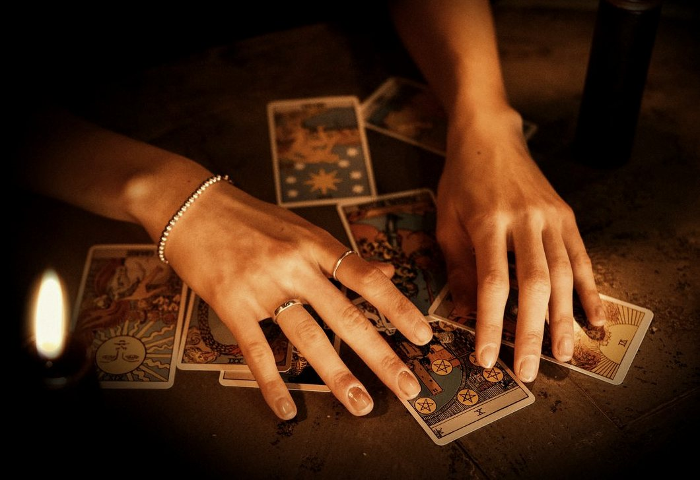

Les Reflets de la Nuit
Une consultation de clairvoyance, dans le calme de chez vous.
Les consultations, dès 50 €Sur rendez-vous, par téléphone, de vingt minutes à une heure. Des créneaux en après-midi et en soirée, jusqu’à 1 h du matin.
« Le jour et la nuit ne font qu’un. »
Qui je suis
Je m’appelle Sarah. Je consulte par téléphone, sur rendez-vous, et je réponds par e-mail aux Questions Éclair.
Je crois profondément que même au cœur de la nuit, une lumière peut apparaître et nous permettre de voir notre chemin autrement.
Sarah

Une consultation avec moi
Vous venez avec une question, ou un doute qui ne vous lâche pas. Je vous dis ce que je perçois, avec douceur et sans détour. Ensuite, c’est vous qui décidez de ce que vous en faites. Mes consultations s’adressent aux femmes comme aux hommes, pour une question précise ou pour faire le point.
Les consultations
De vingt minutes à une heure, selon ce que vous avez à poser.